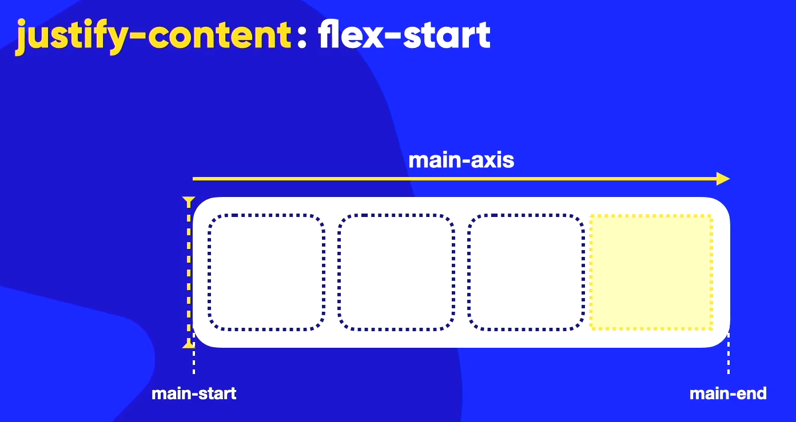
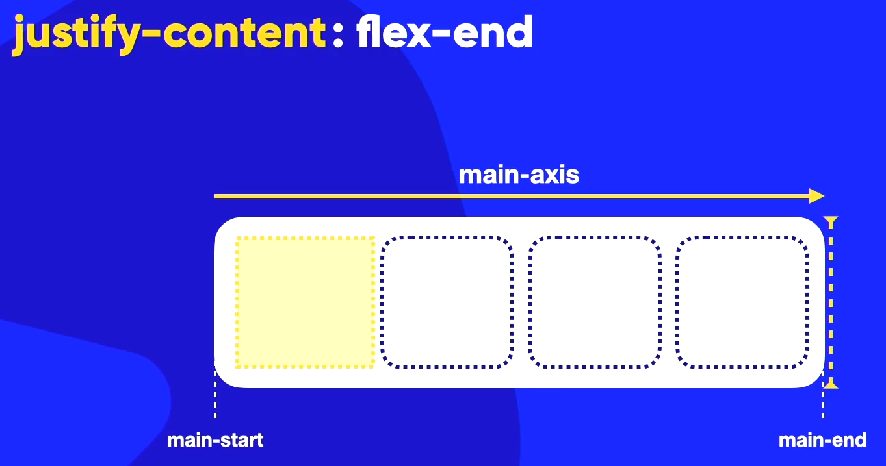
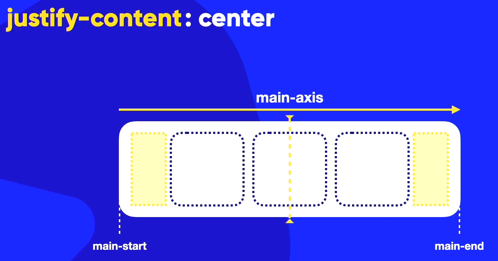
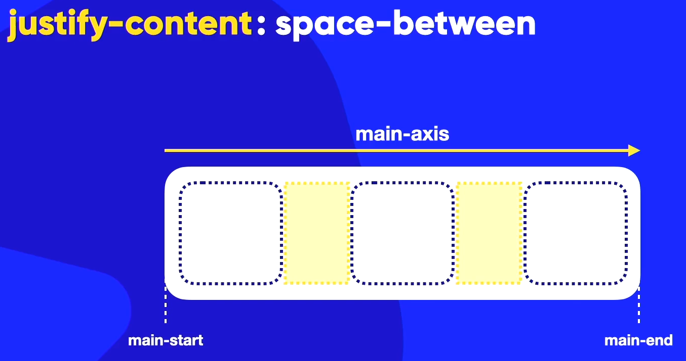
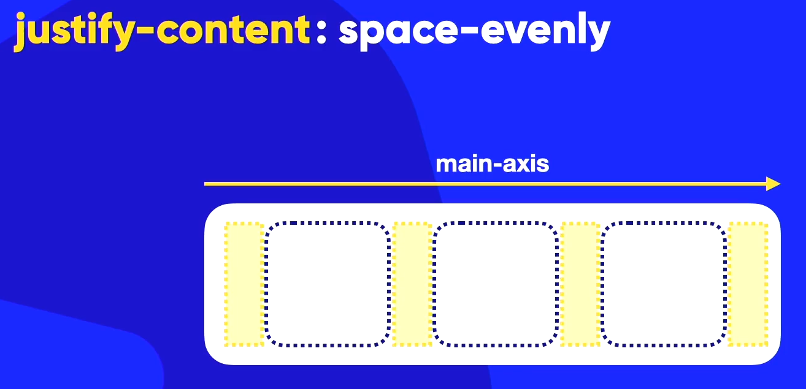
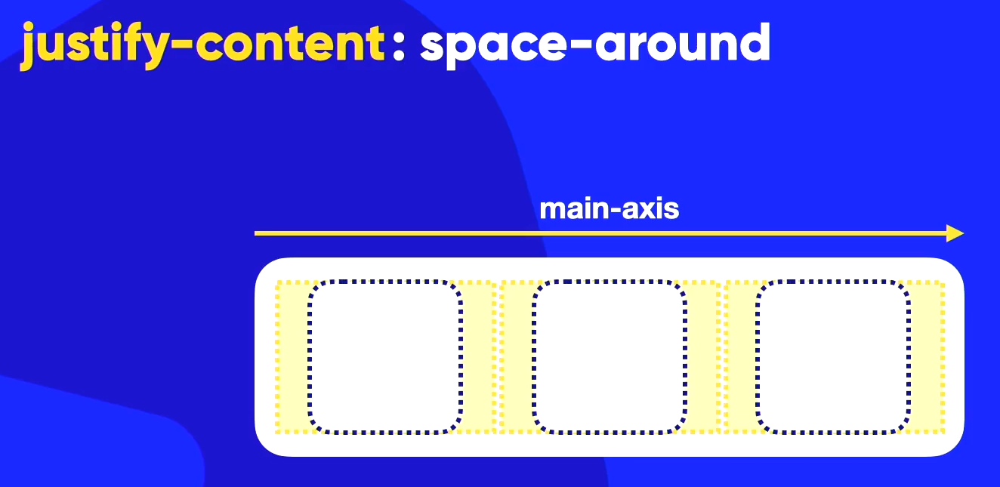

Alinhamento no eixo principal (main-axis)
Nesta aula veremos como efetuar o alinhamento de itens e começaremos com o alinhamento do eixo principal que é o main-axis, e como vimos anteriormente, devemos saber sobre o main-start e o main-end.
Para o alinamento do eixo principal, utilizamos a propriedade justify-content:, e como acabamos de falar ela serve para o alinhamento apenas do main-axis ou eixo principal.
Essa propriedade pode receber os seguintes valores:
- flex-start; - esse valor faz com que o conteúdo tenha seu alinhamento no início do eixo principal, e se houver alguma sobre de espaço disponível, ele será "colocado" no final do eixo principal;

- flex-end; - esse valor faz com que o último item do conteúdo seja alinhado no final do eixo principal, e como consequência o espaço em brando do bloco (se houver), é colocado no início do eixo principal;

- center; - esse valor faz com que o conteúdo dentro do bloco seja alinhado no centro do eixo principal;

- space-between; - esse é um valor de alienhamento de espaçamento, e ele vai distribuir o espaço entre os itens, colocando sempre o primeiro item alinhado no início do eixo principal e o último item alinhado no final do eixo principal, os demais itens serão distribuídos unioformemente;

- space-evenly; - esse valor distribui o espaço uniformemente entre todos os itens, inclusive no primeiro e último item do bloco;

- space-around; - esse valor distribui o espaço do bloco uniformemente ao redor dos itens que estão dentro dele;

Os três últimos são alinhamentos de espaçamento.
Exemplo
Exemplo de caixa A
Exemplo de caixa B
Exemplo de caixa C
Exemplo de caixa D
No exemplo acima utilizamos o valor space-around na declaração justify-content, o que faz com que o espaço do bloco seja distribuído uniformemente ao redor dos itens que estão dentro dele.
O código na CSS ficou assim:
div.conteiner {
background-color: lightgray;
display: flex;
flex-flow: row wrap;
justify-content: space-around;
}
Alinhamento no eixo transversal (cross-axis)
O alinhamento no eixo transversal é o alinhamento do cross-axis, e para isso utilizamos o align-items:.
Essa alinhamento sempre vai ser feito levando em consideração o eixo transversal, ou seja, cross-start e o cross-end.
Os valores para a declaração align-items: são:
- stretch; - esse valor faz com que o conteúdo dentro do bloco se estique para preencher todo o espaço disponível no eixo transversal, que é o padrão caso não seja especificado o valor;
- flex-start; - esse valor faz com que o conteúdo tenha seu alinhamento no início do eixo transversal, e se houver alguma sobra de espaço disponível, ele será "colocado" no final do eixo transversal;
- flex-end; - esse valor faz com que o último item do conteúdo seja alinhado no final do eixo transversal, e como consequência o espaço em branco do bloco (se houver), é colocado no início do eixo transversal;
- center; - esse valor faz com que o conteúdo dentro do bloco seja alinhado no centro do eixo transversal;
- baseline; - esse valor faz com que o conteúdo dentro do bloco seja alinhado pela base dos textos;
Para utilizar o alinhamento no eixo transversal, no nosso exemplo precisaremos aumentar o tamanho do bloco.
Exemplo
Exemplo de caixa A
Exemplo de caixa B
Exemplo de caixa C
Exemplo de caixa D
O código na CSS do nosso exemplo ficou assim:
div.conteiner2 {
background-color: lightgray;
height: 300px;
display: flex;
flex-flow: row wrap;
justify-content: space-around;
align-items: stretch;
padding: 10px;
}